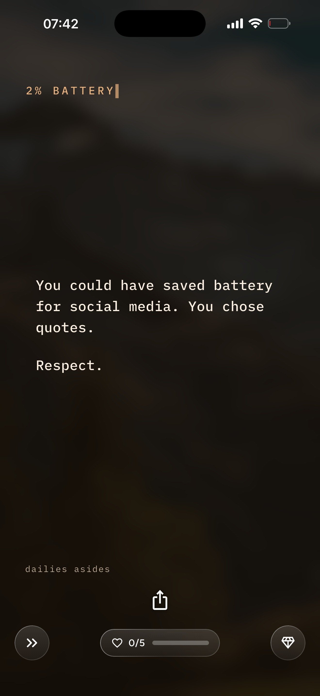
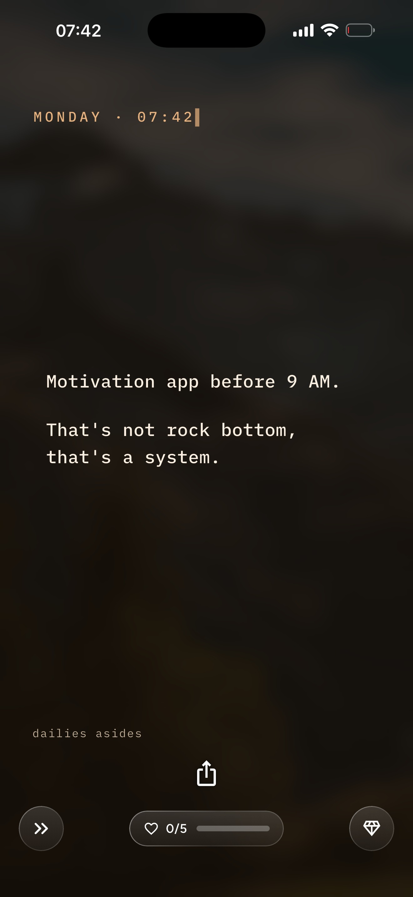
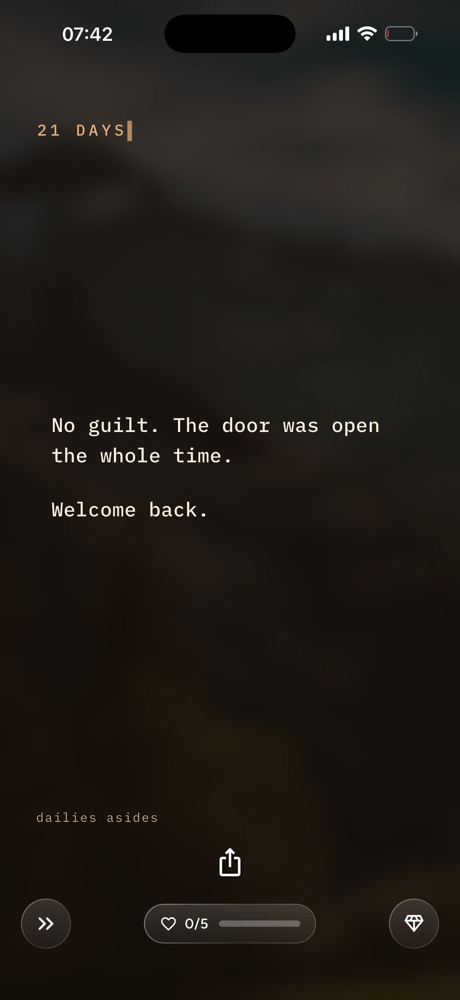

Dailies
A motivational quotes app that keeps a line on your Lock Screen and Home Screen, so you see it without opening anything. Free to download, with an optional Premium subscription and a free trial.
A widget that moves
The quote on the Home Screen widget is not a still picture: the background moves slowly behind the words, so the screen feels alive without being loud.
Also as a GIF: moving-widget.gif

Asides: the app notices you
Now and then, instead of a quote, Dailies shows an Aside: a short line about your moment right now. It knows when your battery is almost empty, when it's Monday before 9am, or when you come back after three weeks away. All of this is worked out on the phone itself. Asides need no permissions, no account and no server.



Made by Amit Shabtay with his son. Questions: hi@mydailies.app. Feel free to use any of these images in an article about Dailies.